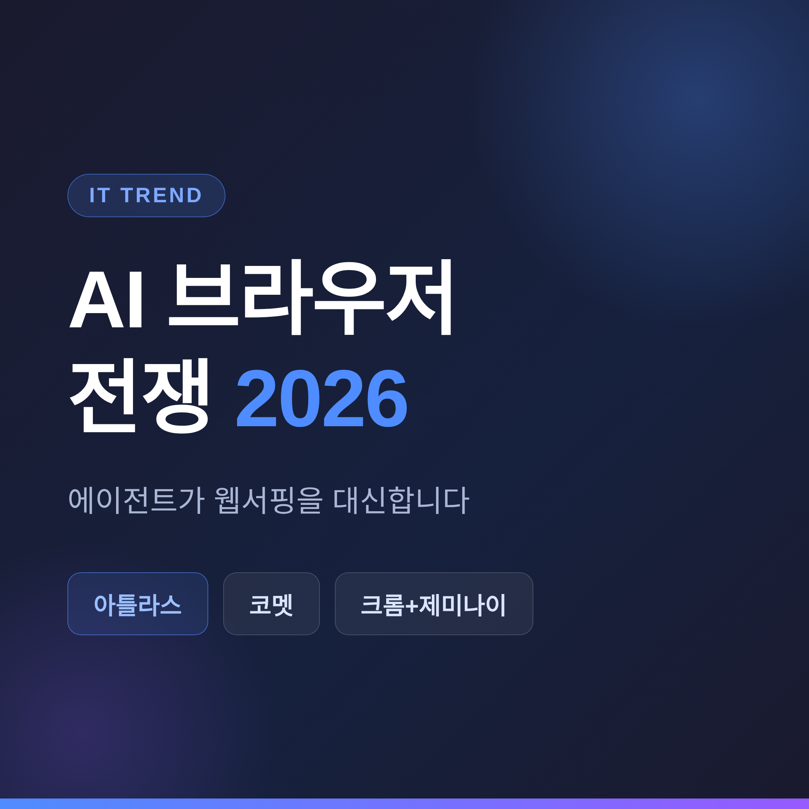
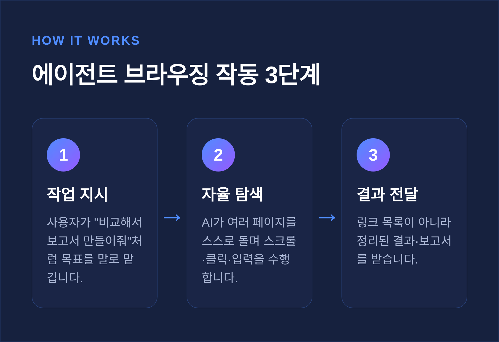
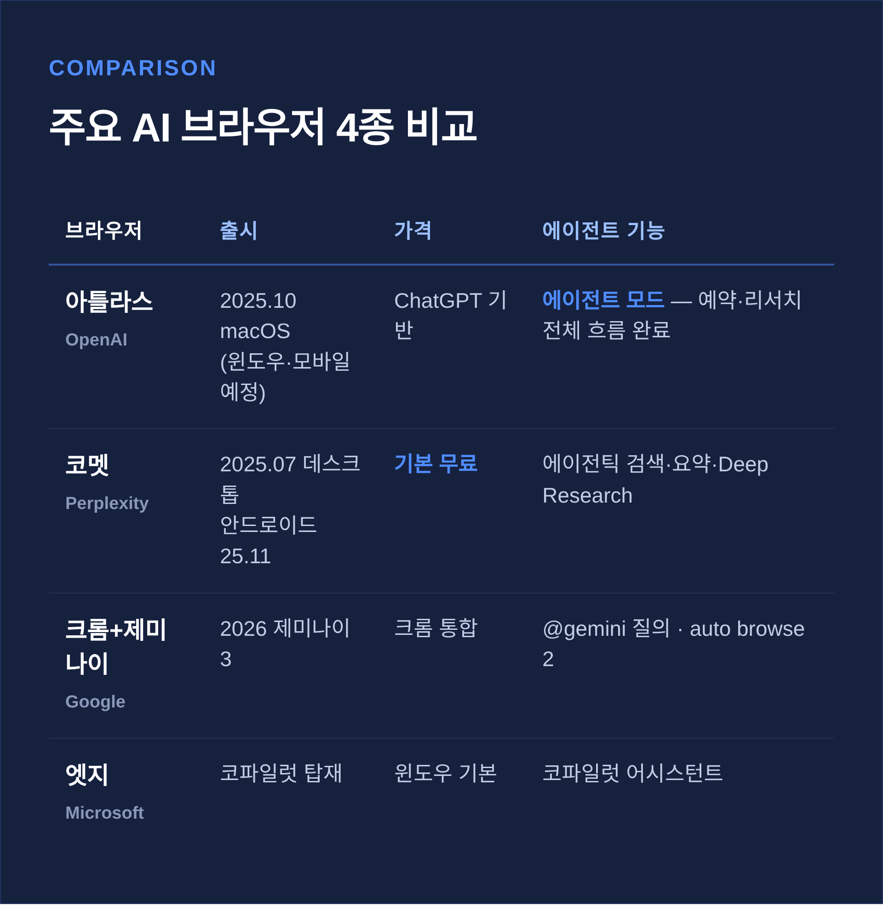
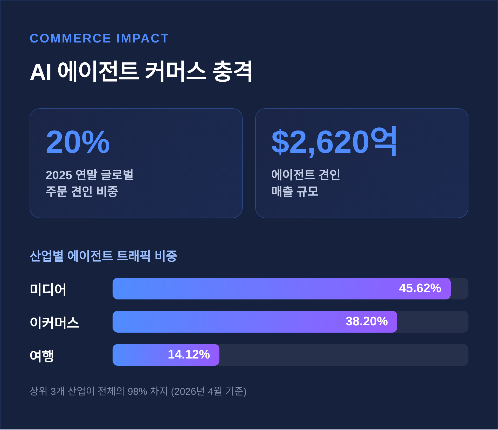

AI 브라우저 전쟁 2026, 에이전트가 웹서핑을 대신합니다
이번 글에서는 2026년 AI 브라우저 전쟁의 판도를 정리해 보겠습니다.
세 줄 요약입니다.
첫째, 브라우저의 경쟁축이 '렌더링 속도'에서 'AI가 작업을 대신해 주는가'로 옮겨갔습니다.
둘째, OpenAI 아틀라스, Perplexity 코멧, 구글 크롬+제미나이가 주도하고 있습니다.
셋째, 편리함은 분명하나 프롬프트 인젝션이라는 보안 숙제가 아직 남아 있습니다.
핵심 답변을 먼저 드리면 이렇습니다. 대다수 한국 사용자에게 가장 현실적인 첫 접점은 크롬+제미나이가 될 가능성이 큽니다.

AI 브라우저, 무엇이 달라졌나
기존 브라우저는 웹페이지를 빠르게 그려 보여주는 도구였습니다.
에이전트 브라우저는 다릅니다. AI가 사용자를 대신해 스크롤하고, 클릭하고, 폼을 채웁니다.
"여행을 리서치하고 옵션을 비교해 보고서를 만들어줘"라고 시키면, 링크 목록을 건네는 대신 여러 페이지를 직접 돌아다니며 일을 끝냅니다.
예전엔 검색 결과를 받아 내가 하나씩 눌렀습니다. 지금은 작업을 맡기고 결과를 받습니다.
검색창에 챗봇을 붙인 정도가 아니라, 행동하는 어시스턴트를 중심으로 브라우저를 다시 설계한 셈입니다.
연구 데모에서 대중 소비자 제품까지 약 15개월 만에 도달했고, 그 속도는 더 빨라지고 있습니다.

전선의 주역들
지금 전선의 한가운데에는 세 진영이 있습니다.
OpenAI — 아틀라스(ChatGPT Atlas).
2025년 10월 21일 macOS에서 전 세계 출시됐고, 윈도우·iOS·안드로이드는 출시 예정입니다.
초기엔 macOS 14 이상과 애플 실리콘(M1+)에서만 돌아갔습니다.
핵심은 '에이전트 모드'입니다. ChatGPT가 브라우저를 직접 제어해 여행 계획, 경쟁사 리서치, 호텔 예약 같은 전체 흐름을 완료합니다.
다만 안전을 위해 코드 실행·파일 다운로드·확장프로그램 설치는 막아두었고, 금융 사이트 같은 민감한 곳에서는 사용자가 지켜보는지 확인하려 잠시 멈춥니다.
Perplexity — 코멧(Comet).
2025년 7월 데스크톱으로 처음 나왔고, 안드로이드는 2025년 11월, iOS는 2026년 3월에 이어졌습니다.
기본 기능은 무료입니다. 에이전틱 검색, 페이지 요약, 음성 모드, 쇼핑 어시스턴트, Deep Research를 그대로 씁니다.
2026년 4월 기준 전체 에이전트 트래픽에서 48.12%로 1위를 차지했습니다.
구글 — 크롬+제미나이(Gemini).
2026년 제미나이 3 기반으로 크롬에 AI 기능이 대규모로 들어갔습니다.
주소창에 @gemini로 자연어 질문이 가능하고, 'auto browse 2'가 장바구니 채우기나 예약 같은 잡무를 대신합니다.
이 밖에 마이크로소프트 엣지의 코파일럿, The Browser Company의 Dia, 프라이버시를 앞세운 Brave의 Leo도 같은 길을 걷고 있습니다.

우리 일상은 어떻게 바뀌는가
가장 큰 변화는 커머스입니다.
AI 에이전트는 2025년 연말 쇼핑 시즌에 글로벌 주문의 20%를 견인했고, 매출로는 2,620억 달러에 달했습니다.
에이전트 트래픽이 많은 산업은 미디어 45.62%, 이커머스 38.20%, 여행 14.12% 순이었습니다. 이 셋이 전체의 98%를 차지했습니다(2026년 4월 기준).
결제 방식도 빠르게 정비되고 있습니다. 2026년 초 약 90일 동안 구글, 코인베이스, 비자, 페이팔이 잇따라 에이전트 결제 프로토콜을 내놓았습니다.

편리함 뒤에 남은 숙제
좋은 점만 있는 것은 아닙니다.
가장 큰 위협은 '프롬프트 인젝션(prompt injection)'입니다. 악성 웹페이지에 숨겨둔 명령을 AI가 사용자의 진짜 지시로 착각해, 해로운 행동을 대신 수행하도록 속이는 공격입니다.
보안업체 NeuralTrust는 아틀라스에서 'URL처럼 보이는 악성 문자열'을 신뢰된 명령으로 해석하게 만드는 취약점을 찾아냈습니다.
코멧에서는 조작된 URL로 이메일·캘린더 같은 민감 데이터에 접근해 외부로 빼내도록 만드는 'CometJacking'이 보고됐습니다.
일부 분석은 코멧 설계가 표준 크롬보다 피싱에 최대 85% 취약하다고 봤습니다만, 단일 출처라 그대로 단정하긴 이릅니다.
업계도 한계를 인정합니다. OpenAI는 프롬프트 인젝션이 "여전히 미해결의 최전선 보안 문제"이며, 끝내 완전히 해결되지 않을 수도 있다고 밝혔습니다.
아직 완벽하지는 않습니다. 편리함과 위험이 같은 문 안에 있습니다.
한국 사용자에게는
한국에서는 어떤 그림일까요.
코멧은 한국시간 2025년 11월 21일 새벽 안드로이드 버전을 정식 출시했고, 네이버·쿠팡 같은 국내 사이트 테스트에서 꽤 정확한 결과를 보였습니다.
구글은 2026년 4월 20일 'Gemini in Chrome'을 포함한 크롬 AI 기능을 한국에 선보였습니다.
아틀라스와 코멧의 에이전트 기능은 초기에 미국·macOS 우선이라, 한국 사용자는 시차를 두고 만나게 됩니다.
반면 국내 점유율 절대 강자인 크롬에 제미나이가 통합됐습니다. 그래서 많은 한국 사용자에게는 크롬+제미나이가 가장 자연스러운 출발점이 될 가능성이 큽니다.
다만 네이버 자체 AI 브라우저의 출시 여부는 이번 조사에서 확인되지 않았습니다.
시장은 어디로 향하나
크롬은 여전히 강합니다. 다만 2026년 점유율은 출처에 따라 65.1%(전년 대비 하락)에서 71.37%(전년 대비 상승)까지 폭이 있습니다. 측정 방법의 차이입니다.
AI 브라우저 시장은 2024년 45억 달러에서 2034년 약 768억 달러로, 연평균 32.8% 성장이 전망됩니다.
크롬의 점유율이 향후 3년간 파편화될 수 있다는 관측도 나옵니다. 가트너는 2026년까지 생성형 AI가 답변 엔진을 대체하며 전통 검색량이 25% 줄어든다고 내다봤습니다.
물론 신규 진입자들도 크롬이 쌓아온 '사용 습관'이라는 해자를 넘어야 합니다.
정리하면 이렇습니다.
브라우저 전쟁의 무대는 더 이상 속도가 아닙니다. "누가 내 일을 대신 끝내주는가"로 옮겨갔습니다.
편리함은 이미 손에 잡힐 만큼 와 있고, 위험은 아직 문턱에 남아 있습니다.
어떤 브라우저를 첫 손에 쥐겠냐고 물으신다면, 저는 지켜보는 눈을 거두지 말라고 답하겠습니다.